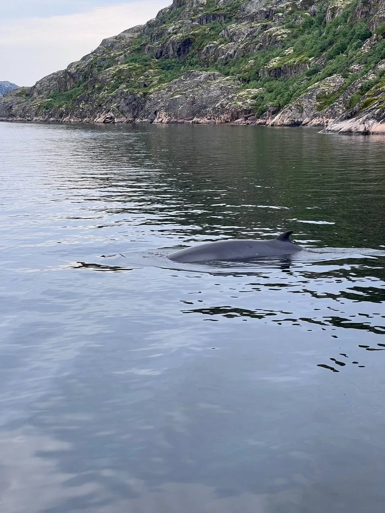
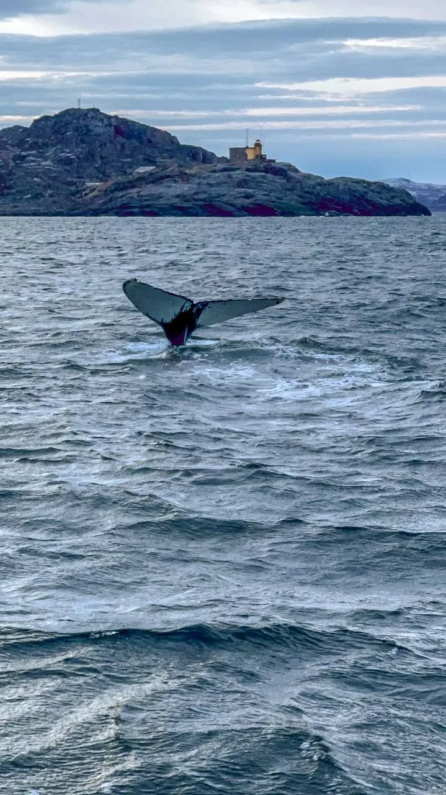
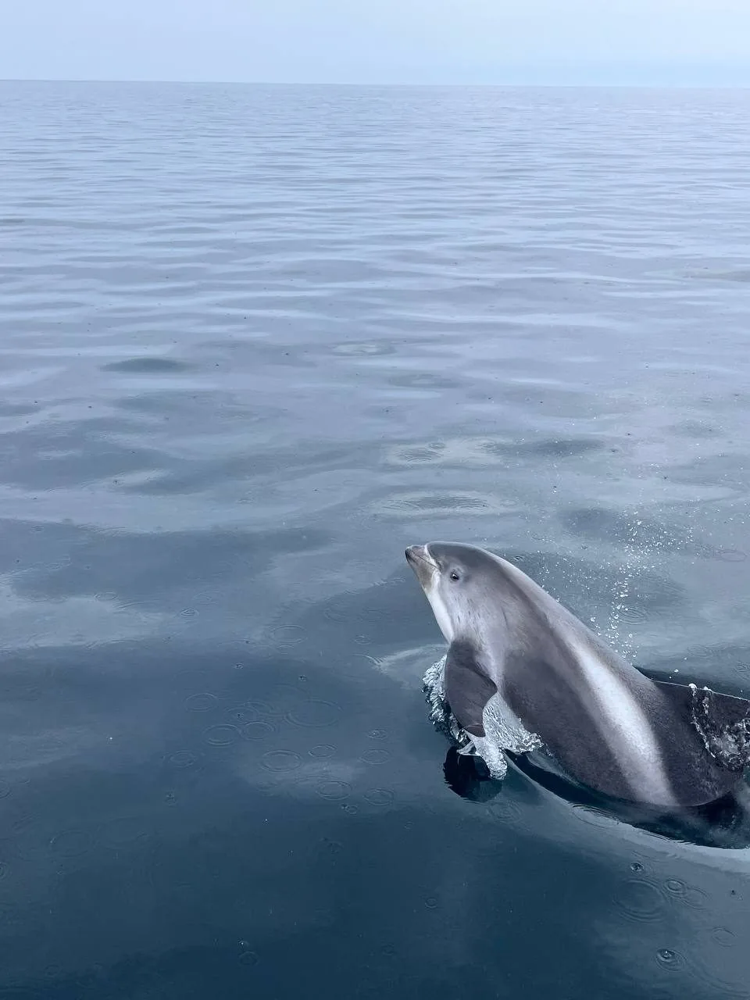
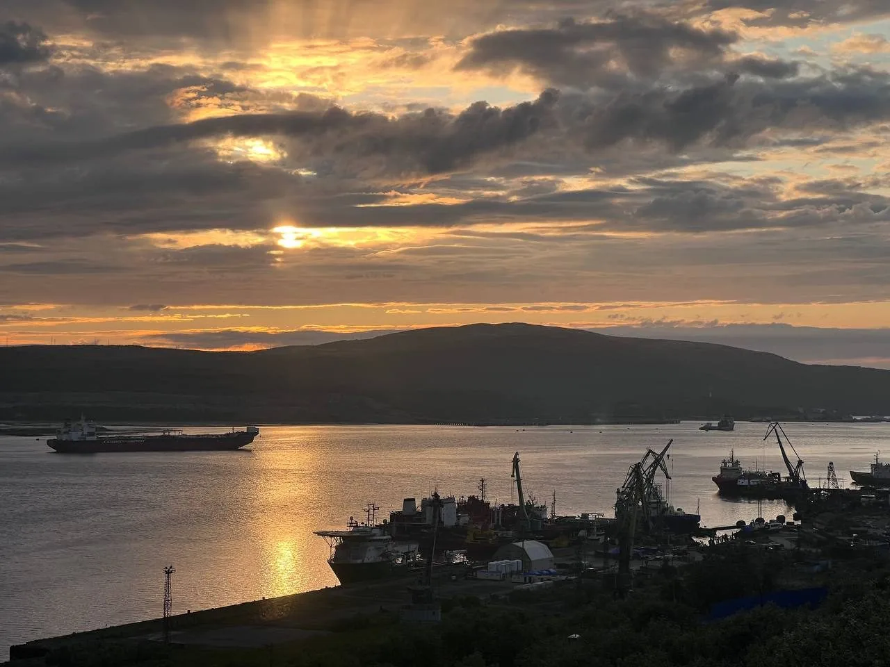
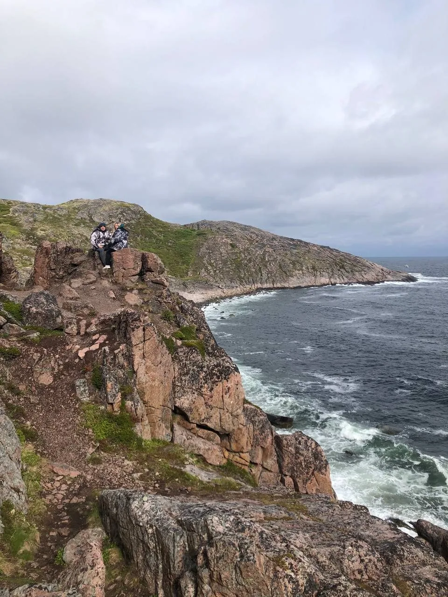

К китам под Мурманском выходят в море из нескольких точек — из Териберки, из Ура-губы и с полуостровов Рыбачий и Средний. Териберка — самая доступная и популярная: сюда проще всего добраться, и именно отсюда чаще всего организуют однодневные морские экскурсии.
Наблюдать китов можно с мая по сентябрь. Стопроцентной гарантии не даёт никто: киты дикие, а погоду в Арктике не заказать. Но в сезон, с опытным капитаном, который знает места кормёжки, шансы встречи высокие. Ниже — всё, что нужно знать перед поездкой: когда ехать, каких китов и морских обитателей реально увидеть, как проходит морская прогулка и сколько это стоит.
01Когда сезон китов в Териберке: по месяцам
Киты приходят к побережью Кольского полуострова вслед за рыбой — сельдью, мойвой, сайкой. Пока в Баренцевом море есть корм, есть и киты. Морские выходы проводятся в тёплый сезон, когда вода спокойнее и суда стабильно ходят.
| Месяц | Шанс встретить китов | Комментарий |
|---|---|---|
| Май | Средний–высокий | Старт сезона, рыба подходит к берегу, китов уже встречают |
| Июнь | Высокий | Много корма, активные киты, длинный полярный день |
| Июль | Высокий | Спокойное море, тёплая для Севера погода |
| Август | Высокий | Стабильные выходы в море |
| Сентябрь | Высокий | Меньше туристов, часто отличная видимость |
Сезон длится с мая по сентябрь — в остальные месяцы регулярных морских выходов к китам нет. Удачный кадр можно поймать в любой месяц сезона: люди едут именно ради того, чтобы увидеть и сфотографировать китов, и месяца «лучше для фото» здесь нет — важнее погода и удача.
02Кого можно увидеть в море
В акватории Баренцева моря у Териберки живёт богатый морской мир. Чаще всего туристы встречают китов, но выход в море почти всегда дарит встречу с кем-то из обитателей.
Малый полосатик (минке)
Самый частый гость. Небольшой усатый кит с изогнутым спинным плавником, нередко подходит близко к судам.

Горбатый кит (горбач)
Крупный кит, эффектно показывает хвост-«бабочку» перед глубоким нырком. Самый желанный кадр любого туриста.

Беломордые дельфины
Быстрые и любопытные, идут за судном и выпрыгивают из воды. Встречаются целыми стаями.

Кого ещё можно встретить:
🐋 Финвал (сельдяной кит) — второе по величине животное на планете после синего кита, встречается реже.
🤍 Белухи — белые полярные киты, иногда заходят группами.
🖤 Косатки — редкая, но возможная встреча.
🐬 Морские свиньи — самые маленькие китообразные наших вод.
🦭 Тюлени и морские зайцы — крупные ушастые тюлени Баренцева моря, любопытно высовывают головы из воды у скал.
03Богатый мир птиц Баренцева моря
Побережье и острова у Териберки — это ещё и настоящий птичий рай. На прибрежных скалах гнездятся птичьи базары: тысячи птиц сидят ярусами на отвесных утёсах и наполняют воздух криком.
Здесь можно увидеть моевок, кайр, чаек, бакланов, полярных крачек и гаг, а на дальних мысах и островах — колонии морских птиц, за которыми специально едут фотографы и орнитологи. Во время морской прогулки птицы сопровождают судно почти всю дорогу, так что без кадров вы точно не останетесь.
04Где наблюдают китов: как проходит морская прогулка
Экскурсии к китам стартуют с побережья Баренцева моря — из Териберки, а также из Ура-губы или с Рыбачьего. Туристов сажают на маломерное судно, которое выходит из бухты в открытое море. До мест, где обычно встречаются киты, идти около получаса; там судно сбавляет ход, и начинается самое интересное — поиск.
Капитаны — местные, они знают, куда в этом сезоне подходит рыба, а за ней и киты. Кита сначала выдаёт фонтан — облачко водяного пара над водой, потом появляется тёмная спина или взмах хвоста. Вода в Баренцевом море холодная и часто с волной, поэтому выход в море — это всегда немного приключение.
05Как добраться до Териберки из Мурманска

Териберка находится примерно в 120 км от Мурманска, дорога занимает около 2–2,5 часов в одну сторону. Своей машины у большинства туристов нет, а рейсовый транспорт ходит редко и не подстроен под морские выходы. Поэтому самый простой вариант — однодневная экскурсия из Мурманска с трансфером: вас забирают из города, везут в Териберку, организуют морскую прогулку и возвращают обратно.
Такой формат экономит силы и снимает всю логистику: не нужно искать судно, договариваться с капитаном и следить за расписанием.
06Реально ли увидеть кита — честно о шансах
Главный вопрос всех туристов: «А точно ли мы увидим кита?» Честный ответ — никто не может обещать кита на 100%, и любой, кто обещает, лукавит. Киты — дикие животные, они перемещаются за кормом, а Арктика диктует свои условия по погоде и волне.
07Что взять с собой на морскую экскурсию
Собираясь на морскую прогулку, возьмите:
- тёплую непродуваемую куртку и штаны, шапку и перчатки — даже в июле;
- непромокаемую обувь и дождевик на случай брызг и волны;
- заряженный телефон или камеру — кадры с китами получаются потрясающие;
- если склонны к укачиванию — таблетки от морской болезни заранее, за 30–40 минут до выхода в море.
Всё остальное для программы (трансфер, судно, сопровождение гида) в организованном туре уже включено.
08Что ещё посмотреть в Териберке

Поездку к китам логично совместить с главными локациями Териберки — всё рядом:
- Кладбище кораблей — деревянные остовы рыболовецких судов на берегу бухты, один из самых узнаваемых видов Русского Севера.
- Батарейский водопад — выпадает прямо из озера Малое Батарейское почти в море; к нему ведёт тропа вдоль скалистого побережья.
- «Яйца дракона» — гигантские круглые валуны на пляже, отшлифованные морем.
- Качели у Баренцева моря и арт-инсталляции — те самые кадры, ради которых Териберку полюбили после фильма «Левиафан».
За один насыщенный день можно увидеть и китов, и все ключевые точки Териберки.
09Как выбрать экскурсию к китам
При выборе тура обращайте внимание на три вещи: местный ли гид (он знает сезон и локации), включён ли трансфер из Мурманска (иначе логистика ляжет на вас) и честно ли говорят о шансах (обещания «100% кита» — тревожный сигнал).
Однодневный тур в Териберку на поиски китов
Трансфер из Мурманска, выход в Баренцево море, местный гид и главные локации Териберки — кладбище кораблей, Батарейский водопад и «Яйца дракона» — в одной программе.
10Частые вопросы
Наблюдать китов можно с мая по сентябрь. Это весь сезон морских выходов; месяца «лучше остальных» нет — всё решают погода и удача, а увидеть и сфотографировать китов можно в любой месяц сезона.
Чаще всего — малого полосатика (минке) и горбатого кита, реже — финвала. Также встречаются белухи, косатки, беломордые дельфины, морские свиньи, тюлени и морские зайцы. Вдобавок — птичьи базары с моевками, кайрами, бакланами и гагами.
В сезон при выходе в море с опытным капитаном шансы высокие, но стопроцентной гарантии не даёт никто — киты дикие, а погода в Арктике переменчива.
Однодневный тур в Териберку с трансфером из Мурманска, морской прогулкой и местным гидом стоит 10 000 ₽ с человека.
Териберка примерно в 120 км от Мурманска, дорога — около 2–2,5 часов. Удобнее всего ехать однодневной экскурсией с трансфером, чтобы не заниматься логистикой и поиском судна самостоятельно.
На воде почти вдвое холоднее, чем на суше, поэтому нужна тёплая непродуваемая одежда, шапка и перчатки даже летом, непромокаемая обувь и дождевик, заряженная камера, а при склонности к укачиванию — таблетки от морской болезни.